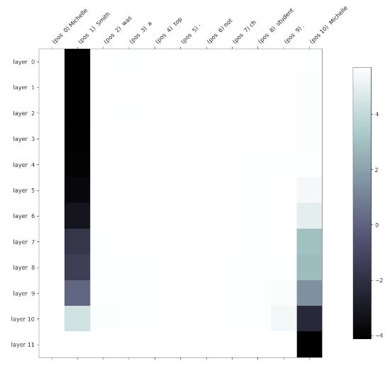

Práctica sobre interpretabilidad mecanicista de transformers¶
La interpretabilidad mecanicista en el contexto de la inteligencia artificial intenta dar una explicación motivada del funcionamiento de los modelos de aprendizaje automático. Es una propuesta muy importante de cara a generar confianza en los sistemas e inducir ciertos comportamientos en ellos. Dentro del campo de la interpretabilidad mecanicista existen un buen número de técnicas que se pueden aplicar a los transformers. Aquí nos centraremos en el parcheado de activaciones.
El parcheado de activaciones interviene en una activación específica de un modelo mediante la sustitución de una activación corrompida con una activación limpia. Se mide entonces cómo afecta el cambio a la salida del modelo. Esto nos permite identificar qué activaciones son importantes para el resultado del modelo y localizar posibles causas de errores en la predicción.
En nuestro caso particular, vas a escribir código que ejecute la versión más pequeña de GPT2 (usa la cadena gpt2 en el código) con dos entradas diferentes: dos textos que solo se diferencien en un único token. La idea es que al proporcionar al modelo la entrada corrompida, intervendremos en el embedding tras una cierta capa (uno solo cada vez) y lo parchearemos con el embedding correspondiente de la ejecución limpia. Luego mediremos cuánto cambia la predicción del siguiente token respecto a la ejecución limpia. Si el cambio es significativo, entonces podemos estar seguros de que la activación que hemos alterado es importante para la predicción. Este proceso de parcheado lo realizaremos para cada capa del modelo y para cada token de la entrada. Con toda esta información, obtendremos una gráfica y sacaremos conclusiones. Por motivos que entenderás en un momento, los dos textos han de tener el mismo número de tokens.
Ejemplo de análisis¶
Daremos un ejemplo para que se entienda mejor. Considera el siguiente texto de entrada: "Michelle Jones was a top-notch student. Michelle". Si se lo damos a GPT2 y estudiamos la probabilidad emitida por el modelo para el token que sigue a la segunda aparición de Michelle, obtendremos lo siguiente (solo se muestran los 20 tokens más probables):
| Position | Token index | Token | Probability |
|---|---|---|---|
| 1 | 373 | was | 0.1634 |
| 2 | 5437 | Jones | 0.1396 |
| 3 | 338 | 's | 0.0806 |
| 4 | 550 | had | 0.0491 |
| 5 | 318 | is | 0.0229 |
| 6 | 290 | and | 0.0227 |
| 7 | 11 | , | 0.0222 |
| 8 | 531 | said | 0.0134 |
| 9 | 468 | has | 0.0120 |
| 10 | 635 | also | 0.0117 |
| 11 | 1625 | came | 0.0091 |
| 12 | 1297 | told | 0.0084 |
| 13 | 1422 | didn | 0.0070 |
| 14 | 2993 | knew | 0.0067 |
| 15 | 1816 | went | 0.0061 |
| 16 | 561 | would | 0.0061 |
| 17 | 3111 | worked | 0.0055 |
| 18 | 750 | did | 0.0054 |
| 19 | 2486 | Obama | 0.0053 |
| 20 | 2492 | wasn | 0.0050 |
Como era de esperar, el token "Jones" tiene una probabilidad notablemente elevada. Ahora, considera la entrada corrompida "Michelle Smith was a top-notch student. Michelle". Si le damos esta entrada a GPT2, esperamos que la probabilidad de "Jones" como continuación del texto sea mucho menor que antes y que la de "Smith" sea mucho mayor, lo que (puedes comprobarlo) efectivamente ocurre. Pero queremos ir más allá y saber qué embeddings son los que más influyen en esta diferencia. Dado que ambas entradas tienen 11 tokens (más adelante explicaremos cómo averiguarlo) y que el transformer del modelo GPT2 pequeño tiene 12 capas, si nos centramos en los embeddings que se obtienen a la salida de cada capa, podemos parchear 11×12 = 132 embeddings diferentes. Calcularemos, por tanto, 132 veces la diferencia entre el logit de "Smith" y el logit de "Jones" en la salida del último token de la entrada ("Michelle") en el modelo corrompido. Observa que también podríamos calcular las diferencias tras aplicar la función softmax, pero en este caso no lo haremos.
Una representación en forma de mapa de calor del resultado es la siguiente:

Recuerda que en un gráfico como el anterior, debido a la máscara de atención y a la disposición de las capas, la información fluye de izquierda a derecha y de arriba a abajo. Puedes ver cómo intervenir en la primera columna no tiene efectos en la predicción del siguiente token, lo que tiene todo el sentido, ya que los embeddings que se parchean tienen exactamente los mismos valores en el modelo limpio y en el corrompido, ya que el contexto anterior es el mismo. Tampoco parece haber cambios al parchear los embeddings de la tercera a la antepenúltima columna. Sin embargo, observa cómo al intervenir los embeddings de muchas capas del segundo token, la predicción se decanta hacia "Jones" (el color se hace oscuro cuando la diferencia entre el logit de "Smith" y el de "Jones" se va haciendo negativa porque "Jones" tiene un logit mayor). Modificar los embeddings de las últimas capas del segundo token tiene efectos mucho menores, ya que el embedding apenas puede influir en el futuro de la secuencia. En la última posición ("Michelle") se observa que los embeddings de las capas finales van anticipándose al token que tienen que predecir.
Algunos textos corrompidos adicionales que puede ser interesante explorar son, por ejemplo, "Jessica Jones was a top-notch student. Michelle" o "Michelle Smith was a top-notch student. Jessica".
Entrega¶
En esta práctica se trata de que programes el código que te permite obtener gráficas y probabilidades como las anteriores, propongas tus propios textos limpios y corrompidos (intenta tirar de creatividad y no estudiar textos o fenómenos muy similares), realices un análisis parecido al anterior y escribas un informe dentro de un documento de entre 1500-2000 palabras (ambos límites son estrictos) en el que presentes y comentes el código que has implementado, además de presentar tu enfoque, los resultados y las conclusiones pertinentes. Serán bienvenidas las ideas originales y los experimentos adicionales que se te ocurran. El documento en formato PDF ha de ser enviado por el sistema de tutoría de UACloud antes de las 23.55 del domingo 4 de febrero de 2024. La práctica ha de ser realizada en parejas. Recuerda poner el nombre de ambos autores en el documento.
Código base¶
El código base que usaremos es el de la implementación de GPT2 que se encuentra en el repositorio minGPT de Andrej Karpathy. Su código es el que ha inspirado nuestro código del modelo transformers, por lo que no te resultará difícil entenderlo. Puedes clonar el repositorio en tu ordenador o trabajar en un cuaderno de Google Colab como se indica más abajo.
Debido a cambios en elementos externos, el código actual no funciona tal cual. Para que funcione, tienes que cambiar la línea 200 del fichero mingpt/model.py de:
assert len(keys) == len(sd)
a:
assert len(keys) == len([k for k in sd if not k.endswith(".attn.bias")])
Tokenization¶
El modelo GPT2 usa un tokenizador basado en BPE que trocea el texto de entrada en palabras o en unidades inferiores dependiendo de su frecuencia. El código de minGPT permite descargar dicho tokenizador y usarlo para segmentar los textos. El siguiente código muestra cómo tokenizar un texto para obtener sus índices y viceversa.
from mingpt.bpe import BPETokenizer
input = "Michelle Jones was a top-notch student. Michelle"
print("Input:", input)
bpe = BPETokenizer()
# bpe() gets a string and returns a 2D batch tensor
# of indices with shape (1, input_length)
tokens = bpe(input)[0]
print("Tokenized input:", tokens)
input_length = tokens.shape[-1]
print("Number of input tokens:", input_length)
# bpe.decode gets a 1D tensor (list of indices) and returns a string
print("Detokenized input from indices:", bpe.decode(tokens))
tokens_str = [bpe.decode(torch.tensor([token])) for token in tokens]
print("Detokenized input as strings: " + '/'.join(tokens_str))
Detalles de implementación¶
Lo siguiente son algunos detalles de implementación que te pueden ser útiles, pero que no es necesario que sigas.
Para conseguir un código que te permita realizar el parcheado de activaciones te tendrás que centrar en los ficheros mingpt/model.py y generate.ipynb. Si trabajas en local sin usar un notebook (recomendado) copia el código de generate.ipynb en un fichero generate.py que puedas ejecutar desde la línea de órdenes.
También puedes trabajar directamente en una sesión de Google Colab. Aquí tienes un proyecto (accede con tu cuenta de gcloud.ua.es) con instrucciones sobre cómo usarlo para desarrollar. Sin embargo, es mucho más cómodo desarrollar en local (entre otras cosas, puedes trabajar con un mejor editor de texto que el de Colab y también depurar). Incluso si no tienes una GPU, el código funciona sin problemas sobre CPU y solo tarda unos segundos más que sobre GPU al solo trabajar con un texto y con un modelo no excesivamente grande.
Añade a la función forward del transformer código que permita salvar (según el valor de cierto flag booleano recibido como parámetro) en una variable de instancia las activaciones de cada capa y cada posición. Recuerda hacer una copia profunda de los embeddings y no guardar únicamente una referencia que puede ser sobreescrita posteriormente; para ello, consulta la secuencia de llamadas .detach().clone() de PyTorch. Añade también código que permita (de nuevo en base a un parámetro booleano) parchear el embedding de una capa y posición concretas.
Añade también a la función forward código que guarde los logits del último token, que contienen la información que nos interesa sobre la predicción del siguiente token. Puedes guardar esta información en un atributo que luego puedes acceder desde el exterior de la clase. Observa que solo te interesa el vector correspondiente al último token.
Añade código al fichero generate.py que divida el texto limpio en tokens, lo pase por el modelo a través de la función generate (pidiéndole al modelo que guarde los embeddings intermedios) y muestre las continuaciones más probables a partir de los logits del último token. Ten en cuenta que si quieres saber la probabilidad de una continuación como el token "Jones", por ejemplo, has de buscar el índice de dicho token en el vocabulario anteponiéndole un espacio en blanco (index = bpe(' Jones')). Esto es así porque el segmentador de BPE trata de forma diferente los tokens que aparecen al principio de la secuencia y los que aparecen en medio. Una vez tengas el índice del token, puedes acceder a la posición correspondiente del vector de logits y obtener la probabilidad no normalizada de que sea la continuación.
Después, puedes trabajar con el texto corrupto. Incluye un doble bucle que itere sobre todas las capas y todas las posiciones y llame cada vez a generate pasándole la capa y la posición en la que realizar la intervención. En cada paso, evalúa la diferencia de logits oportuna y guárdala en una matriz de diferencias.
Usa finalmente la función matshow de matplotlib para visualizar la matriz de diferencias.
Una explicación más informal¶
La siguiente explicación informal puede que te ayude a entender mejor el objetivo de la práctica.
Considera para simplificar la frase "a b c" y la versión corrompida "d e f". En general, habrá muchos más tokens en común, pero así queda todo más claro en la siguiente discusión. Considera que el modelo neuronal basado en el transformer tiene 5 capas de atención. Considera que vamos a estudiar qué embeddings son importantes para la predicción de que tras estas frases vaya el token "X".
Se trata primero de que permitas que en la función forward del transformer (clase GPT) se puedan guardar (por ejemplo en una lista de listas de tensores) los 3x5=15 embeddings que se generan a la salida de cada una de las capas cuando se procesa la frase "a b c". En el enunciado se dan algunos detalles porque no puedes guardar simplemente la referencia a los tensores, ya que se modificarán la próxima vez que llames a forward, sino que has de clonar los tensores (lo que se llama "copia defensiva"). Con esto tendrás almacenados los 15 tensores (embeddings) de la frase limpia.
Guárdate también los logits tras la última capa. En particular, solo necesitarás los de la última posición (es decir, los logits correspondientes al token "c"), que te dan una medida de la probabilidad del siguiente token, es decir, del token que irá tras "c". Recuerda que estos logits no son realmente probabilidades (son valores como -11.1, -0.5, 0.78, o 2.32323) porque no se les ha aplicado la función softmax, pero trabajar con ellos es más cómodo que trabajar con las probabilidades porque tenemos valores con un rango más amplio. No obstante, el estudio podría hacerse igualmente con probabilidades estrictas. En realidad, ni siquiera necesitas guardarte todos los logits, sino solo el escalar que corresponde al token "X" porque es lo único que usarás después.
Ahora le das al modelo la versión corrompida "d e f", indicándole que no sobreescriba la copia de los embeddings que obtuvimos con la frase limpia. La frase corrompida ha de tener el mismo número de tokens que la limpia para que la siguiente discusión tenga sentido. La idea es modificar uno solo de los 15 embeddings que se producen mientras se procesa la frase sucia. Si, por ejemplo, nos centramos en el embedding del primer token ("d") tras la primera capa, se trataría de que el código de la función forward opere "casi" de la forma normal, pero cuando se obtenga la salida de la primera capa y antes de pasarla como entrada a la segunda capa, se ha de modificar el embedding correspondiente a la primera palabra (solo ese) y sustituirlo por el embedding correspondiente (de la misma capa y posición) que te guardaste para la frase limpia (es decir, en este caso, sería el embedding que te guardaste tras la primera capa para el token "a"). Con esto, la segunda capa recibirá como entrada el embedding que se generó para "a" en lugar del de "d".
Tras intervenir en el embedding de la posición 1 tras la capa 1, el resto del modelo trabaja sin ningún "contratiempo". De la misma manera que antes, ahora miramos los logits de la predicción del token que va tras el último token de la frase corrompida (es decir, "f"). Y nos centramos en el valor del logit de la predicción del token "X". La diferencia entre este valor y el que nos guardamos para la frase limpia nos da una idea de cómo de relevante es el embedding de la capa 1 y posición 1 en la predicción del token "X". En el enunciado se muestra cómo algunos embeddings son mucho más relevantes que otros. Y tú tienes que hacer un estudio similar con diferentes frases.
Si repites la operación anterior con los otros 14 embeddings (llamando 14 veces más a la función forward), terminarás teniendo 15 diferencias de logits (15 valores escalares) que puedes representar en un mapa de calor de 3x5 como se ve más arriba.
Finalmente, ten en cuenta que la discusión de este apartado tiene una pequeña simplificación respecto a lo que se pide en el enunciado de más arriba. Allí se proponía calcular la diferencia entre el logit de "Smith" y el logit de "Jones" en la salida del último token en el modelo corrompido, lo que da un poco más de información que la diferencia que hemos explicado en este apartado, es decir, la diferencia entre la predicción de un solo token ("Jones") en la frase limpia y la corrompida, en lugar de dos tokens en la frase corrompida. En realidad, cualquiera de las dos opciones es válida para llegar a las conclusiones que nos interesan: que en la frase corrompida, el logit de "Jones" se hace mucho menor excepto para ciertas intervenciones. Si quieres que tu mapa de calor coincida con el de este enunciado, sigue el enfoque basado en los dos tokens "Jones" y "Smith".
Ampliar conocimientos¶
Lo anterior es solo uno de los múltiples análisis que se han propuesto dentro de la interpretabilidad mecanicista. Para esta práctica no se espera que vayas más allá de esto, pero si te interesa conocer un par de análisis más puedes consultar este tutorial. Observa que aunque el tutorial usa una librería para parchear las activaciones, en esta práctica no puedes usar ninguna librería para ello y lo has de hacer directamente sobre el código de minGPT. Una revisión mucho más detallada sobre la interpretabilidad mecanicista se puede encontrar en este trabajo de Neel Nanda.